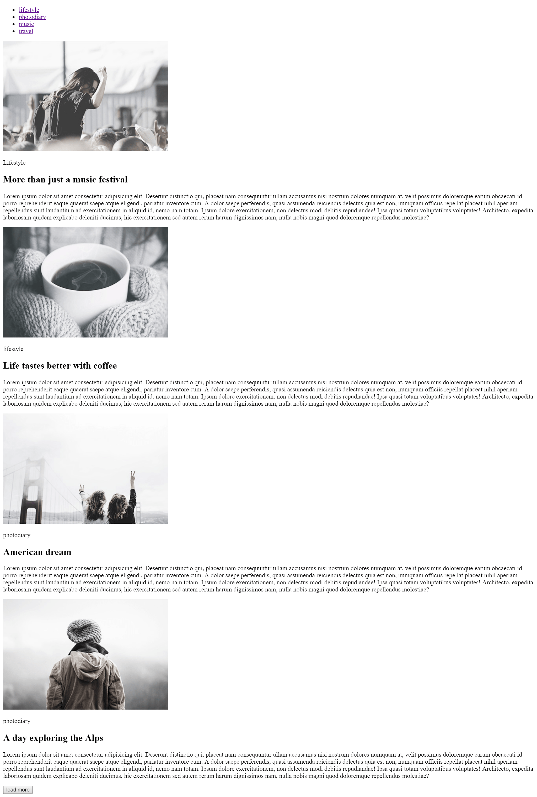

Модуль 1 - Домашнє завдання
Зверстати сторінку на основі макета homework-01.psd
- Перекласти макет сторінки в HTML-розмітку, без CSS оформлення.
- Зображення наріжте з макета.
- Підготовлені зображення розмістіть в папці
img в папці проекту. - Весь текстовий контент взяти з макета.
- Готове домашнє завдання буде виглядати як на скріншоті нижче.
